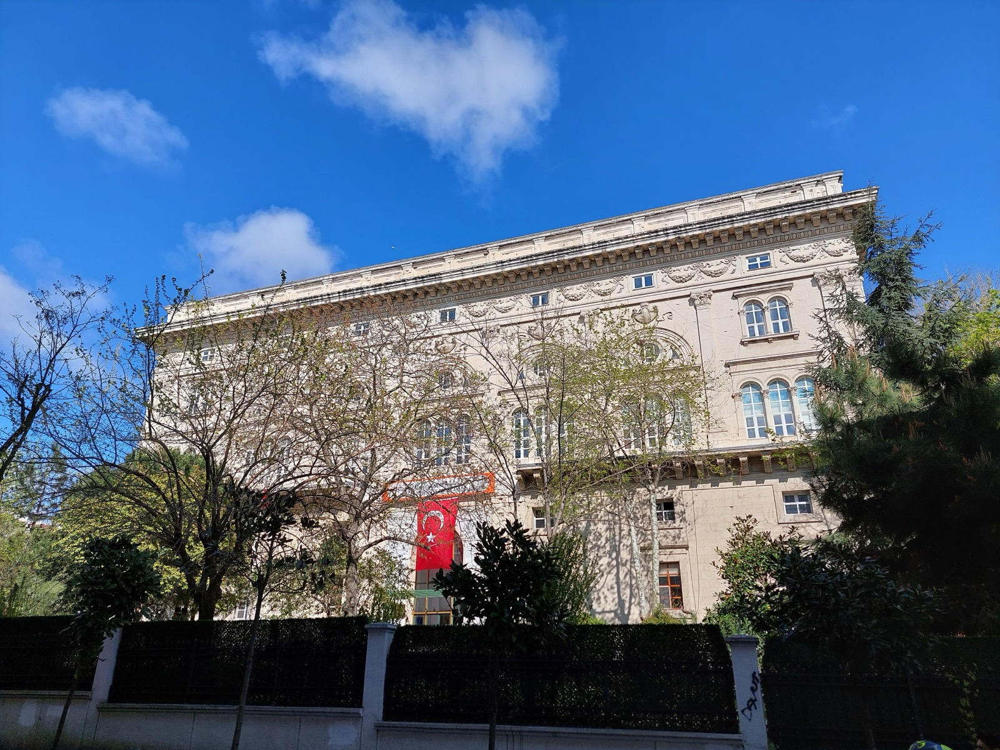
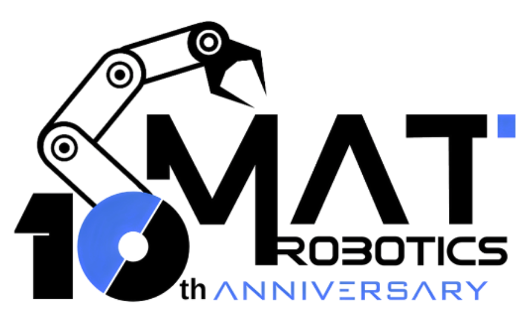
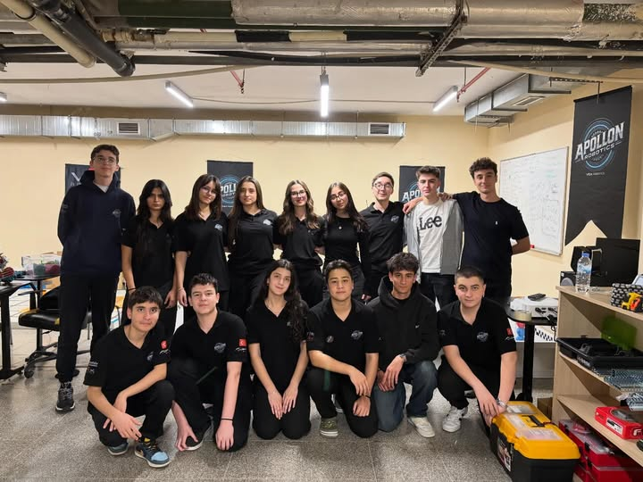
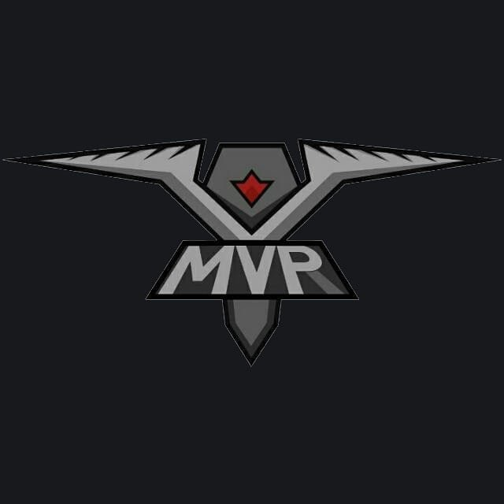
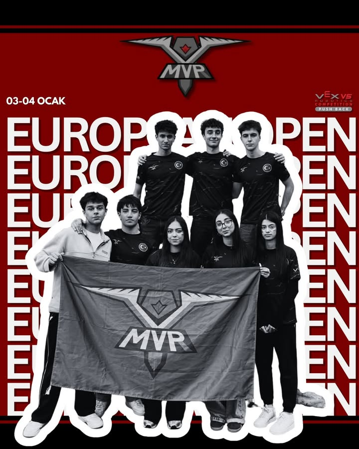
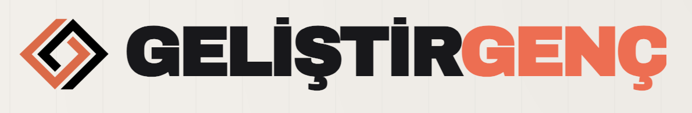
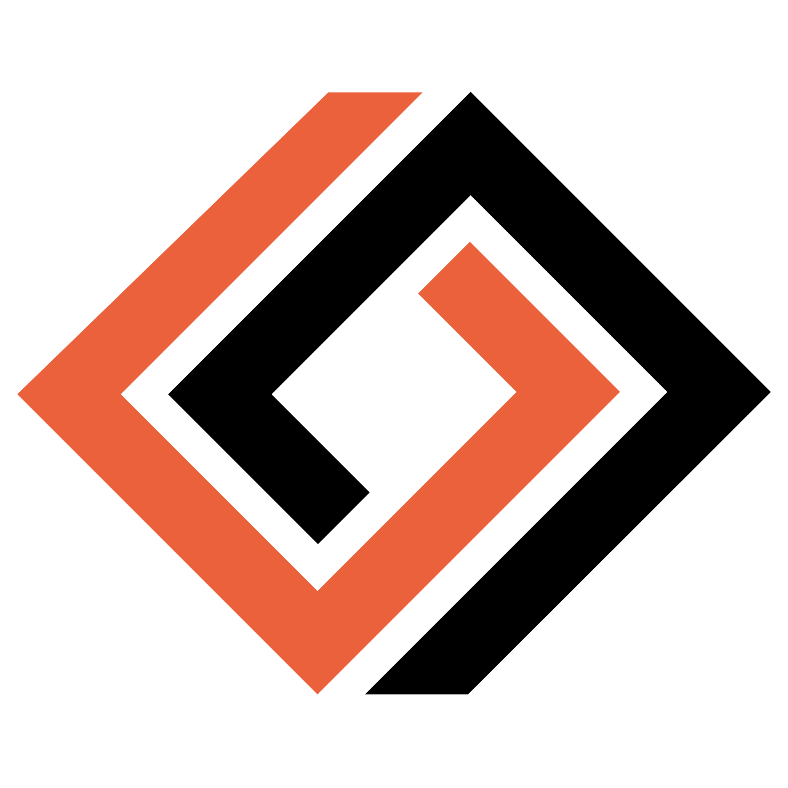
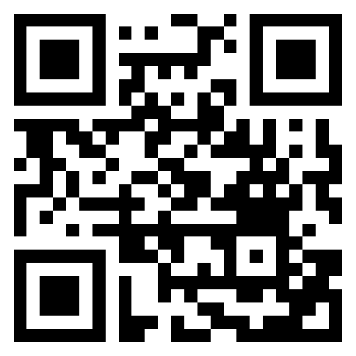

The school first opened on 16 September 1945 in Tophane under the name Tophane Erkek Sanat Enstitusu.
School introduction
YTU Macka: a technical school with history, workshops, and student teams.
This website introduces Yildiz Technical University Macka Vocational and Technical Anatolian High School. It focuses on the school's background, current student life, robotics teams, and student-made digital media.

School Building
1945
First opened
Macka
Istanbul campus
History
From Tophane to Macka
Macka Schools, officially known today as Yildiz Technical University Macka Vocational and Technical Anatolian High School, is located in Macka, Istanbul. The school is known as one of Turkey's older vocational and technical education institutions.
The school's identity changed many times as technical education in Turkey developed. It continued under names such as Macka Sanat Enstitusu, technical high school, vocational high school, and Anatolian technical high school before taking its current YTU-connected name.
After the old building was expropriated in 1957, the school moved to its current building in Macka and continued under the name Macka Sanat Enstitusu.
With the protocol between the Ministry of National Education and Yildiz Technical University, the school name became Yildiz Technical University Macka Vocational and Technical Anatolian High School.
School today
A place for technical education, clubs, and student production
The school is not only about classes. Students work with robotics, software, engineering design, media production, and online publishing. These projects make the school culture more active and easier to see from outside the building.
Technical education
Students learn through lessons, workshops, and hands-on technical projects.
Robotics teams
FRC and VEX-style teams give students experience in design, building, coding, and competition pressure.
Digital publishing
Student platforms help projects, interviews, and technology stories reach a wider audience.
Teams and platforms
Three student groups from the school ecosystem
This part is separated into tabs so each group can have its own photos, explanation, and links. More photos can be added later inside the correct carousel.
FRC robotics
MAT Robotics - Team 6228
MAT Robotics is the FRC robotics team of YTU Macka Vocational and Technical Anatolian High School. The team takes part in FIRST Robotics Competition work, where students design, build, wire, program, and test a robot for a new challenge each season.
According to the team's own website, the team was founded by two teachers and eight students to join the first FRC competitions organized in Turkey in 2015. Since then, its work has grown beyond only building the robot. The team also prepares engineering plans, business plans, sponsorship materials, presentations, and student-led outreach projects.
- Robot design, manufacturing, electronics, and programming
- Competition preparation, driver practice, and pit organization
- Projects such as MATx, Girls FIRST in MTAL, Machina, and Mecha Forge


Add more Team 6228 event photos here later.
VEX robotics
MVR Macka VEX Team
MVR Macka is not a general activity page. It is a VEX robotics team connected with the school environment. The team focuses on VEX robot design, mechanical building, coding, driving practice, match strategy, and competition preparation.
In a VEX season, students usually work with a compact robot, autonomous routines, driver-controlled match practice, field testing, and quick repairs. The team photos and materials also show European Open related competition work, so this section is written as a robotics team profile instead of a basic school activity.
- VEX robot building, testing, and match strategy
- Autonomous coding, driver practice, and engineering documentation
- European Open related team material shown in the current photo set


Add more MVR robot, match, and award photos here later.
Digital media
GelistirGenc
GelistirGenc is a youth-focused digital media platform that aims to highlight young people who think, build, and produce technology. It showcases the projects, achievements, and stories of young individuals in fields such as software development, artificial intelligence, robotics, entrepreneurship, gaming, and science.
At the same time, it presents important technology developments from Turkiye and around the world through a youth-oriented perspective. Its purpose is not only to share news, but also to create an ecosystem that inspires young people and encourages them to produce, innovate, and take action.
- Technology news and student project stories
- Guides, interviews, reviews, and club updates
- A platform for making student production more visible


Add article covers, interview photos, or event visuals here later.
Gallery
Images used in this project
Building
MVR VEX
Team 6228
GelistirGenc
QR code
Open the site on a phone
Anyone who scans this QR code will open https://ytumacka.mirzalan.com directly.
Download QR code{kind=link}

https://ytumacka.mirzalan.com